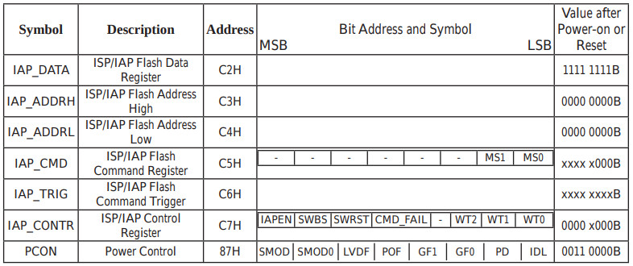
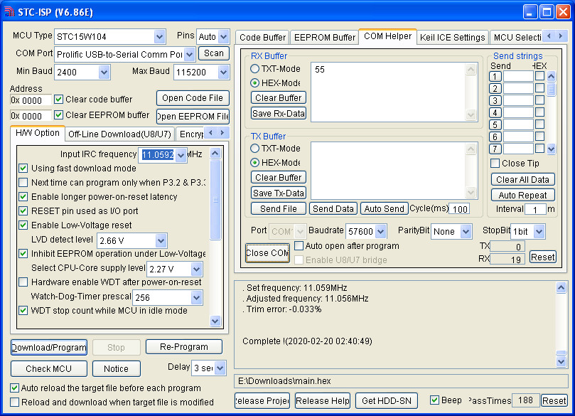

參考資訊：
http://plit.de/asem-51/
http://www.stcisp.com/stcisp620_off.html
https://sourceforge.net/projects/mcu8051ide/
暫存器

led set p3.2
uart_tx set p3.1
iap_data set 0c2h
iap_addrh set 0c3h
iap_addrl set 0c4h
iap_cmd set 0c5h
iap_trig set 0c6h
iap_contr set 0c7h
.org 0h
jmp _start
.org 100h
_start:
setb led
mov r0, #00h
mov r1, #00h
call eeprom_erase
mov r0, #00h
mov r1, #00h
mov r2, #55h
call eeprom_write
mov r0, #00h
mov r1, #00h
call eeprom_read
call uart_send
clr led
jmp $
eeprom_disable:
mov iap_contr, #00h
mov iap_cmd, #00h
mov iap_trig, #00h
mov iap_addrh, #80h
mov iap_addrl, #00h
ret
eeprom_erase:
mov iap_addrh, r1
mov iap_addrl, r0
mov iap_contr, #83h
mov iap_cmd, #3
mov iap_trig, #5ah
mov iap_trig, #0a5h
nop
call eeprom_disable
ret
eeprom_read:
clr iap_data
mov iap_addrh, r1
mov iap_addrl, r0
mov iap_contr, #83h
mov iap_cmd, #1
mov iap_trig, #5ah
mov iap_trig, #0a5h
nop
mov a, iap_data
call eeprom_disable
ret
eeprom_write:
mov iap_data, r2
mov iap_addrh, r1
mov iap_addrl, r0
mov iap_contr, #83h
mov iap_cmd, #2
mov iap_trig, #5ah
mov iap_trig, #0a5h
nop
call eeprom_disable
ret
uart_send:
mov r0, #8
clr uart_tx
mov r1, #44
djnz r1, $
u0:
rrc a
jc u1
clr uart_tx
sjmp u2
u1:
setb uart_tx
u2:
mov r1, #44
djnz r1, $
djnz r0, u0
setb uart_tx
mov r1, #44
djnz r1, $
ret
.end
編譯
$ mcu8051ide --compile main.s
完成
